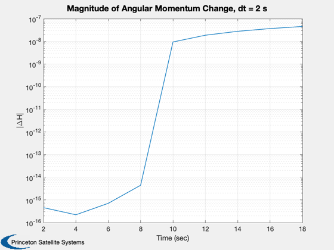
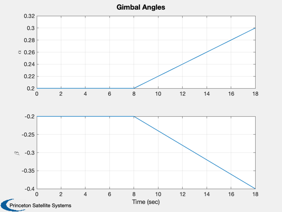
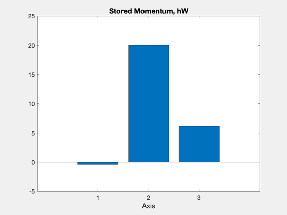

Verify momentum conservation and rate adjustment for gimbal commands.
The CAD model has a flat plate sail with a rigid mast attached by two gimbals. The gimbals are modeled as achieving any commanded rate up to some maximum instantaneously. A momentum sink is used to isolate the boom motion from the core body rates. Angular momentum conservation is confirmed by using different time steps and confirming that a smaller time step results in a smaller momentum change over the course of the simulation.
Functions demonstrated: SailWithBoom.m / SailWithBoom.mat, the CAD model HGimballedBoom.m, angular momentum function TwoBodyRateModel.m, attitude dynamics integrated with RK4
Since version 7. ------------------------------------------------------------------------ See also Constant, NewFig, Plot2D, Mag, RK4, Unit, JD2000, QSunPointing, SunVectorECI, HGimballedBoom ------------------------------------------------------------------------
Contents
%------------------------------------------------------------------------------- % Copyright (c) 2005 Princeton Satellite Systems, Inc. % All rights reserved. %------------------------------------------------------------------------------- %%%%%%%%%%%%%%%%%%%%%%%%%%% % User Parameters %%%%%%%%%%%%%%%%%%%%%%%%%%% dT = 2; % sec aRate = 0.01; % rad/sec %%%%%%%%%%%%%%%%%%%%%%%%%%% clear f; clear tq; %--------------------
Load the sail model
%-------------------- g = load('SailWithBoom.mat'); %-------------------------------
Create the disturbance profile
%-------------------------------
Parameters for the orbit. We are creating a circular orbit.
%------------------------------------------------------------ r = Constant('au'); % Radius in km mu = Constant('mu sun');
Initial Julian date
%--------------------
p = [];
Orbit vector
%-------------
r0 = r*[1;0;0];
Quaternion (sun pointing)
%-------------------------- SunVectorECI( 'initialize', 'sun' ); rSunECI = SunVectorECI( 'update', JD2000, r0 ); q = QSunPointing( Unit(rSunECI) ); % Gimbal angles. The sail is two body with a gimbaled boom % The first angle is the one nearest the core % The axes correspond to the angles % The body array says each gimbal is at the joint between the
core and the boom. The core is defined as body 1 in the CAD file
%-----------------------------------------------------------------
p.angle = [0;0];
p.axis = [1 0;0 1;0 0];
p.body = [2 2];
Sim timing
%-----------
nSim = 10;
t = 0;
Initial state
%-------------- w = 0.001*[-0.4;-1.6;0.1]; angle = [0.2;-0.2]; aDot = [0;0]; x = [q;w;angle;aDot]; hW = [0;0;0]; tPlot = zeros(1,nSim); xPlot = zeros(length(x),nSim); hPlot = zeros(3,nSim); for k = 1:nSim % Store data in plots %-------------------- tPlot(k) = t; xPlot(:,k) = x; % Compute the disturbances. %-------------------------- f.totalBody = zeros(3,1,2); tq.totalBody = zeros(3,1,2); % Boom control %------------- if (k == 5) aDot = aRate*[1;-2]; % Find angular momentum to be absorbed [hT, hW] = HGimballedBoom( [zeros(6,1);x], g, p.axis, aDot, hW ); x(10:11) = aDot; end % Calculate momentum %------------------- hPlot(:,k) = HGimballedBoom( [zeros(6,1);x], g, p.axis, [], hW ); % RHS %---- x = RK4( 'TwoBodyRateModel', x, dT, t, f, tq, g, p, hW ); % Update time %------------ t = t + dT; end dH = hPlot-repmat(hPlot(:,1),1,nSim); Plot2D(tPlot,Mag(dH),'Time (sec)','|\DeltaH|',['Magnitude of Angular Momentum Change, dt = ' num2str(dT) ' s'],'ylog') Plot2D(tPlot,xPlot(8:9,:),'Time (sec)',{'\alpha','\beta'},'Gimbal Angles') NewFig('Momentum'); bar(hW); xlabel('Axis') title('Stored Momentum, hW','fontsize',14,'fontweight','bold') %-------------------------------------- % PSS internal file version information %--------------------------------------  